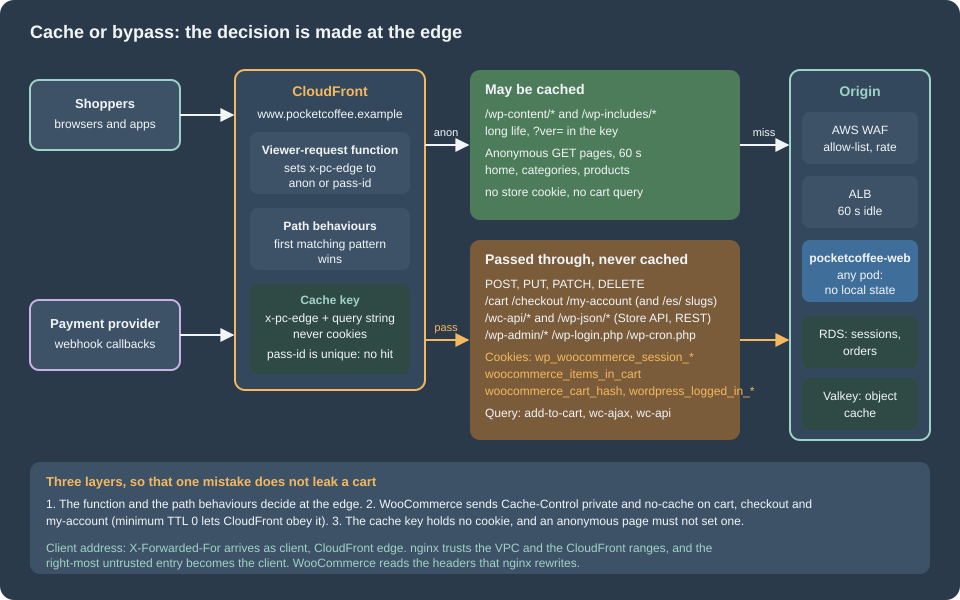

Cloud: Caching, CDN and Checkout
|
This content was generated with the assistance of AI and should be verified against the official documentation before being relied on in production. |
This page was written against WooCommerce 11.2.1 on WordPress 7.1.4 (the security release of 2026-10-28; the pages of this site use 7.1.3 as their baseline), PHP 8.4, Action Scheduler 4.1.0 (bundled), MariaDB 11.8 or MySQL 8.4 on RDS, Kubernetes 1.36 and 1.37 on EKS, nginx 1.29 and OpenTofu 1.12 with the AWS provider 6.x, and checked on 2026-10-29. The WooCommerce facts were read in the source of the 11.2.1 release package; the CloudFront, ALB and WAF facts come from the AWS documentation. The listings were validated with tofu validate -backend=false, node --check plus a unit test of the function, php -l, shellcheck, and nginx -t followed by requests against a running nginx with PHP-FPM. Nothing was created in an AWS account, so no distribution was deployed: the behaviour of CloudFront itself is as documented, not as observed.
A WordPress site can put a CDN in front of almost every page. A store cannot: the cart, the checkout and the account pages differ for every shopper, the same URL can show an empty cart to one visitor and a full one to the next, and a cached copy of the wrong page leaks a stranger’s basket or address. The WordPress media page already puts CloudFront in front of the media bucket, and the object cache page gives the cluster a Valkey. This page adds what a store needs on top of both: which requests CloudFront may cache and which it must pass, how the decision is made from the cookies and query strings that WooCommerce uses, how the Store API and cart fragments behave behind it, which WooCommerce cache groups are persistent, how payment providers reach a pod, which addresses have to be allow-listed in each direction, and how the real client address survives CloudFront and the load balancer. The store is Pocket Coffee, deployed as in Cloud: Deployment Overview with the Helm chart pocketcoffee-woocommerce and the Deployment pocketcoffee-web; the same page-cache rules, as they apply to a server rather than a CDN, are in Performance and Security.

What a store adds to the CDN problem
| Question | Blog or brochure site | Store |
|---|---|---|
What differs per visitor? |
Only the logged-in admin |
The cart, the checkout, the account area, prices with tax, the Store API nonce, the mini cart in some themes |
What marks a visitor as "not anonymous"? |
The WordPress login cookie |
Also the WooCommerce cookies (next section), set at the first add to cart |
Which requests change data? |
Comments, forms |
Add to cart, coupon, checkout submit, payment callbacks, REST and Store API writes |
Who calls the site without a browser? |
Feed readers |
Payment providers, shipping carriers, ERP and the store’s own webhook receivers |
What is the cost of a leak? |
A stale page |
Another shopper’s name, address or order |
The rule that follows is simple to say and easy to break: a cache may only serve a response that does not depend on who asks. Everything below makes that rule hold at three layers, so that a single mistake in one of them does not cause a leak.
The cookies, headers and query strings that decide
WooCommerce marks a visitor as a shopper with cookies. The names below were read in the 11.2.1 source; the lifetimes are in Performance and Security.
| Name | Where it is set and what it means |
|---|---|
|
The session handler ( |
|
|
|
The same method: the hash of the cart contents (filter |
|
|
|
WordPress core: the login cookie, the administration cookie over HTTPS, the password-protected post cookie and the comment author cookie. |
Three consequences matter for a CDN:
-
The first add to cart sets the session cookie and the two cart cookies in one response. From that moment the shopper’s requests have to reach PHP. The checks use the three cart names plus the WordPress ones.
-
woocommerce_recently_viewedis deliberately not in the bypass list of this page. The widget that reads it is a classic-theme feature, and bypassing on it would remove the cache for everyone who looked at a product. If a store uses that widget, add the name to the function, or replace the widget by a block that reads it from the browser. -
Cookies from analytics and consent tools (
_ga, a consent banner) must not decide anything. Matching the exact WooCommerce and WordPress names, and not "any cookie", is what keeps the hit ratio.
The query strings that mean "this response is dynamic" are add-to-cart (a classic add to cart link, which answers with a redirect and Set-Cookie), wc-ajax (the front end’s AJAX endpoint, including get_refreshed_fragments) and wc-api (the payment callback endpoint). A path pattern in CloudFront cannot match a query string, so these are handled by the function, not by a behaviour. WooCommerce’s own cart, checkout and account pages additionally send Cache-Control headers: since WooCommerce 10.1 the wp_headers filter WC_Cache_Helper::prevent_caching adds nocache_headers() for the three pages, removes no-store for anonymous visitors (so that the browser’s back and forward cache keeps working), and defines DONOTCACHEPAGE, DONOTCACHEOBJECT and DONOTCACHEDB. A cache that respects Cache-Control: private therefore does not store them even if a path rule is forgotten.
The three layers at CloudFront
A CloudFront cache behaviour is chosen by the path pattern of the request, and the first match wins. A cache policy says which header, cookie and query-string values enter the cache key and how long objects live; an origin request policy says what else the origin receives. A viewer-request CloudFront Function can read the request, including the cookies, and change it before the cache lookup. The design combines the three:
-
Path behaviours with the managed
CachingDisabledpolicy for every path that is dynamic by definition: the three shop pages,/wc-api/,/wp-json/(the REST API and the Store API),/wp-admin/,/wp-login.php,/wp-cron.phpand/xmlrpc.php. They forward all cookies, headers and query strings to the origin with the managedAllViewerorigin request policy. -
A static behaviour for
/wp-content/*and/wp-includes/*with a long lifetime and theverquery string in the cache key, the string WordPress adds to enqueued scripts and styles. -
A default behaviour for everything else, which is what a visitor sees on the home page, category pages and products. It caches for 60 seconds at most, and its cache key is the query string plus one header,
x-pc-edge, which the viewer-request function writes. The value isanonwhen the request is a cookie-lessGETorHEADwithout a dynamic query string, andpass-followed by the unique request id otherwise. A value that is unique per request can never match another visitor’s entry, so every non-anonymous request is a miss that goes to the origin.
The default behaviour accepts every HTTP method, so that a POST to any URL reaches the origin; the function marks it pass- and CloudFront does not cache it anyway.
The function overwrites any x-pc-edge header a client sends, so the cache key cannot be chosen from outside. It also removes marketing parameters (utm_*, gclid, fbclid) from anonymous requests, because they do not change the page and would otherwise create one cache entry per campaign link.
// CloudFront Function, runtime cloudfront-js-2.0, event type viewer-request.
// It decides, per request, whether a cached copy may be used, and writes the decision into the
// x-pc-edge header, which is part of the cache key of the default behaviour.
// "anon" : an anonymous, cookie-less GET that may share a cache entry with every other visitor.
// "pass-<requestId>": a value that is unique per request, so the request can never hit another visitor's entry.
var STORE_COOKIE_PREFIXES = [
'wp_woocommerce_session_',
'wordpress_logged_in_',
'wordpress_sec_',
'wp-postpass_',
'comment_author_'
];
var STORE_COOKIES = ['woocommerce_items_in_cart', 'woocommerce_cart_hash'];
var DYNAMIC_QUERY = ['add-to-cart', 'wc-ajax', 'wc-api', 'removed_item', 'undo_item', 'preview', 's'];
function hasStoreCookie(cookies) {
var names = Object.keys(cookies);
for (var i = 0; i < names.length; i++) {
if (STORE_COOKIES.indexOf(names[i]) !== -1) {
return true;
}
for (var j = 0; j < STORE_COOKIE_PREFIXES.length; j++) {
if (names[i].indexOf(STORE_COOKIE_PREFIXES[j]) === 0) {
return true;
}
}
}
return false;
}
function hasDynamicQuery(querystring) {
for (var i = 0; i < DYNAMIC_QUERY.length; i++) {
if (querystring[DYNAMIC_QUERY[i]] !== undefined) {
return true;
}
}
return false;
}
// Marketing parameters never change the page, so they must not split the cache.
function stripTracking(querystring) {
Object.keys(querystring).forEach(function (name) {
if (name.indexOf('utm_') === 0 || name === 'gclid' || name === 'fbclid') {
delete querystring[name];
}
});
}
function handler(event) {
var request = event.request;
var bypass = (request.method !== 'GET' && request.method !== 'HEAD')
|| hasStoreCookie(request.cookies)
|| hasDynamicQuery(request.querystring);
if (!bypass) {
stripTracking(request.querystring);
}
// Always overwrite: a client must not be able to choose its own cache key.
request.headers['x-pc-edge'] = { value: bypass ? 'pass-' + event.context.requestId : 'anon' };
return request;
}The listing was syntax-checked with Node.js and run against a table of requests (an anonymous GET, a POST, each of the cookies, add-to-cart and wc-ajax in the query string, a tracking parameter, a forged x-pc-edge header) and returned the expected value for all of them. It runs in the runtime cloudfront-js-2.0 and uses only ES5 syntax.
The distribution follows. The page shows the part that matters (policies, behaviours, function, WAF); the certificate, the Route 53 alias and the media distribution are those of EKS Infrastructure with OpenTofu and the WordPress media page.
terraform {
required_version = ">= 1.8"
required_providers {
aws = {
source = "hashicorp/aws"
version = "~> 6.0"
}
}
}
# CloudFront certificates and CLOUDFRONT-scoped web ACLs live in us-east-1.
provider "aws" {
region = "us-east-1"
}
variable "alb_domain_name" {
description = "DNS name of the ALB that the Ingress of the pocketcoffee release created (origin.pocketcoffee.example points at it)."
type = string
default = "origin.pocketcoffee.example"
}
variable "certificate_arn" {
description = "ACM certificate in us-east-1 for www.pocketcoffee.example."
type = string
}
variable "origin_verify_value" {
description = "Value of the X-Origin-Verify header that CloudFront adds and the ALB rule requires. Read it from Secrets Manager, never from this file."
type = string
sensitive = true
}
variable "admin_cidrs" {
description = "Networks allowed to reach wp-admin and wp-login.php (documentation range as a placeholder)."
type = list(string)
default = ["203.0.113.0/24"]
}
locals {
# Managed policies, by the IDs that the CloudFront documentation lists.
caching_disabled_policy_id = "4135ea2d-6df8-44a3-9df3-4b5a84be39ad"
all_viewer_policy_id = "216adef6-5c7f-47e4-b989-5492eafa07d3"
host_header_only_policy_id = "bf0718e1-ba1e-49d1-88b1-f726733018ae"
# Paths that are never cached. The shop pages use the slugs set in WooCommerce > Settings > Advanced;
# the Spanish storefront has its own slugs under /es/.
dynamic_paths = [
"/cart", "/cart/*",
"/checkout", "/checkout/*",
"/my-account", "/my-account/*",
"/es/carrito", "/es/carrito/*",
"/es/finalizar-compra", "/es/finalizar-compra/*",
"/es/mi-cuenta", "/es/mi-cuenta/*",
"/wc-api/*",
"/wp-json/*",
"/wp-admin/*",
"/wp-login.php",
"/wp-cron.php",
"/xmlrpc.php",
]
}
resource "aws_cloudfront_function" "edge_router" {
name = "pocketcoffee-edge-router"
runtime = "cloudfront-js-2.0"
comment = "Writes the cache decision into x-pc-edge."
publish = true
code = file("${path.module}/edge-router.js")
}
# Static files: versioned by the ?ver= query string that WordPress adds.
resource "aws_cloudfront_cache_policy" "static_files" {
name = "pocketcoffee-static-files"
min_ttl = 1
default_ttl = 86400
max_ttl = 31536000
parameters_in_cache_key_and_forwarded_to_origin {
enable_accept_encoding_gzip = true
enable_accept_encoding_brotli = true
cookies_config {
cookie_behavior = "none"
}
headers_config {
header_behavior = "none"
}
query_strings_config {
query_string_behavior = "whitelist"
query_strings {
items = ["ver"]
}
}
}
}
# Anonymous pages: a short life, keyed on the decision header and the query string, never on cookies.
resource "aws_cloudfront_cache_policy" "anonymous_pages" {
name = "pocketcoffee-anonymous-pages"
min_ttl = 0
default_ttl = 60
max_ttl = 300
parameters_in_cache_key_and_forwarded_to_origin {
enable_accept_encoding_gzip = true
enable_accept_encoding_brotli = true
cookies_config {
cookie_behavior = "none"
}
headers_config {
header_behavior = "whitelist"
headers {
items = ["x-pc-edge"]
}
}
query_strings_config {
query_string_behavior = "all"
}
}
}
# What the origin receives for a cacheable page: the Host header and the query string, and no cookies.
resource "aws_cloudfront_origin_request_policy" "page_origin" {
name = "pocketcoffee-page-origin"
cookies_config {
cookie_behavior = "none"
}
headers_config {
header_behavior = "whitelist"
headers {
items = ["Host"]
}
}
query_strings_config {
query_string_behavior = "all"
}
}
resource "aws_cloudfront_distribution" "shop" {
enabled = true
is_ipv6_enabled = true
comment = "pocketcoffee www"
aliases = ["www.pocketcoffee.example"]
web_acl_id = aws_wafv2_web_acl.shop.arn
http_version = "http2and3"
origin {
origin_id = "alb"
domain_name = var.alb_domain_name
custom_origin_config {
http_port = 80
https_port = 443
origin_protocol_policy = "https-only"
origin_ssl_protocols = ["TLSv1.2"]
origin_read_timeout = 30
origin_keepalive_timeout = 5
}
custom_header {
name = "X-Origin-Verify"
value = var.origin_verify_value
}
}
# Order matters: the first matching path pattern wins.
dynamic "ordered_cache_behavior" {
for_each = local.dynamic_paths
content {
path_pattern = ordered_cache_behavior.value
target_origin_id = "alb"
viewer_protocol_policy = "redirect-to-https"
allowed_methods = ["GET", "HEAD", "OPTIONS", "PUT", "POST", "PATCH", "DELETE"]
cached_methods = ["GET", "HEAD"]
compress = true
cache_policy_id = local.caching_disabled_policy_id
origin_request_policy_id = local.all_viewer_policy_id
}
}
ordered_cache_behavior {
path_pattern = "/wp-content/*"
target_origin_id = "alb"
viewer_protocol_policy = "redirect-to-https"
allowed_methods = ["GET", "HEAD"]
cached_methods = ["GET", "HEAD"]
compress = true
cache_policy_id = aws_cloudfront_cache_policy.static_files.id
# The Ingress routes on the Host header, so the static paths forward it too.
origin_request_policy_id = local.host_header_only_policy_id
}
ordered_cache_behavior {
path_pattern = "/wp-includes/*"
target_origin_id = "alb"
viewer_protocol_policy = "redirect-to-https"
allowed_methods = ["GET", "HEAD"]
cached_methods = ["GET", "HEAD"]
compress = true
cache_policy_id = aws_cloudfront_cache_policy.static_files.id
# The Ingress routes on the Host header, so the static paths forward it too.
origin_request_policy_id = local.host_header_only_policy_id
}
default_cache_behavior {
target_origin_id = "alb"
viewer_protocol_policy = "redirect-to-https"
allowed_methods = ["GET", "HEAD", "OPTIONS", "PUT", "POST", "PATCH", "DELETE"]
cached_methods = ["GET", "HEAD"]
compress = true
cache_policy_id = aws_cloudfront_cache_policy.anonymous_pages.id
origin_request_policy_id = aws_cloudfront_origin_request_policy.page_origin.id
function_association {
event_type = "viewer-request"
function_arn = aws_cloudfront_function.edge_router.arn
}
}
restrictions {
geo_restriction {
restriction_type = "none"
}
}
viewer_certificate {
acm_certificate_arn = var.certificate_arn
ssl_support_method = "sni-only"
minimum_protocol_version = "TLSv1.2_2021"
}
}
resource "aws_wafv2_ip_set" "admin" {
name = "pocketcoffee-admin-networks"
scope = "CLOUDFRONT"
ip_address_version = "IPV4"
addresses = var.admin_cidrs
}
resource "aws_wafv2_web_acl" "shop" {
name = "pocketcoffee-cloudfront"
scope = "CLOUDFRONT"
default_action {
allow {}
}
# wp-admin and wp-login.php only from the office and VPN networks; admin-ajax.php stays open
# because storefront plugins call it.
rule {
name = "admin-allow-list"
priority = 10
action {
block {}
}
statement {
and_statement {
statement {
or_statement {
statement {
byte_match_statement {
search_string = "/wp-admin/"
positional_constraint = "STARTS_WITH"
field_to_match {
uri_path {}
}
text_transformation {
priority = 0
type = "NONE"
}
}
}
statement {
byte_match_statement {
search_string = "/wp-login.php"
positional_constraint = "EXACTLY"
field_to_match {
uri_path {}
}
text_transformation {
priority = 0
type = "NONE"
}
}
}
}
}
statement {
not_statement {
statement {
ip_set_reference_statement {
arn = aws_wafv2_ip_set.admin.arn
}
}
}
}
statement {
not_statement {
statement {
byte_match_statement {
search_string = "/wp-admin/admin-ajax.php"
positional_constraint = "EXACTLY"
field_to_match {
uri_path {}
}
text_transformation {
priority = 0
type = "NONE"
}
}
}
}
}
}
}
visibility_config {
cloudwatch_metrics_enabled = true
metric_name = "admin-allow-list"
sampled_requests_enabled = true
}
}
# Checkout submissions: at most 100 per five minutes from one address.
rule {
name = "checkout-rate-limit"
priority = 20
action {
block {}
}
statement {
rate_based_statement {
limit = 100
aggregate_key_type = "IP"
scope_down_statement {
byte_match_statement {
search_string = "/wp-json/wc/store/v1/checkout"
positional_constraint = "STARTS_WITH"
field_to_match {
uri_path {}
}
text_transformation {
priority = 0
type = "NONE"
}
}
}
}
}
visibility_config {
cloudwatch_metrics_enabled = true
metric_name = "checkout-rate-limit"
sampled_requests_enabled = true
}
}
visibility_config {
cloudwatch_metrics_enabled = true
metric_name = "pocketcoffee-cloudfront"
sampled_requests_enabled = true
}
}tofu init -backend=false and tofu validate passed, and tofu fmt -check reported nothing to change. Nothing was planned or applied.
Reading the configuration
| Behaviour | Policies | Why |
|---|---|---|
|
|
The pages are per shopper. List every translated slug: WooCommerce lets each language have its own page slug, and a slug missing here falls through to the default behaviour, where only the function and the origin headers protect it. |
|
The same |
Payment callbacks and other server-to-server calls with a body, which must reach the origin unchanged. |
|
The same |
The REST API and the Store API ( |
|
The same |
Administration and the login. |
|
A static cache policy and |
Versioned assets. Without the Host header the origin would receive the name of the origin, and the Ingress rule for |
Everything else |
The anonymous pages policy, the page origin request policy and the function |
Cacheable, but only for anonymous requests that the function marked |
Several details are easy to get wrong, and each was a deliberate choice:
-
The cache key never contains cookies. CloudFront’s documentation says that when cookies are not forwarded, it removes them from the request and removes
Set-Cookiefrom the response before returning it; and that when cookies are forwarded, theSet-Cookieheaders are cached with the object and replayed to every later viewer. The second case is how a session cookie ends up in someone else’s browser. The page origin request policy forwards no cookies, so an anonymous page that tries to set one (a plugin, a language switcher) loses it instead of sharing it. That text is from the documentation of the cookie settings; the equivalent behaviour with a cache policy and an origin request policy was not tested. -
The minimum TTL is 0. With a minimum TTL above 0, CloudFront caches an object even if the origin sends
Cache-Control: privateorno-store. The managedCachingOptimizedpolicy has a minimum TTL of one second, which is fine for assets and unsafe for HTML. The anonymous pages policy uses 0, so WooCommerce’s own headers on the three shop pages are obeyed as a second layer. -
The origin request policy of a behaviour decides what reaches WooCommerce. A custom policy that whitelists headers must include
NonceandCart-Token, or the Store API answers401 woocommerce_rest_missing_noncefor every write. The managedAllViewerpolicy forwards all of them, which is why the bypass behaviours use it. -
Short lifetime, no invalidation. Sixty seconds is the price of "a price changed" showing up everywhere without invalidating anything. A longer value needs a plan: an invalidation on product save, or the cache purge hook of a plugin. Stale prices on a store are worse than slow pages.
-
The origin response timeout is the default 30 seconds. The CloudFront documentation says a higher value needs a quota increase. A checkout that takes longer than that fails for the shopper while WooCommerce may still finish the order, so keep checkout under the limit instead of raising it.
-
The origin certificate. With
https-onlyto the ALB, the certificate on the ALB must match the origin name that CloudFront connects to, and the documentation adds that when the viewer Host header is forwarded the origin must also answer with a certificate that matches it. Put bothorigin.pocketcoffee.exampleandwww.pocketcoffee.examplein the ALB certificate. This was not tested. -
The origin must only accept CloudFront. The distribution adds the header
X-Origin-Verify, whose value comes from a variable that holds a Secrets Manager secret. Make the ALB (a listener rule or a regional WAF rule; the rule is not shown here) refuse requests without it, and restrict the ALB security group to the AWS-managed prefix listcom.amazonaws.global.cloudfront.origin-facing. Without both, a client can call the ALB directly and skip the function, the cache rules and the WAF.
Source: Amazon CloudFront Developer Guide: Locations and IP address ranges of CloudFront edge servers
For the CloudFront concepts themselves (cache keys, policy types, invalidation, the signed URLs used for private content), see CloudFront; for the S3 side of the media host, see the bucket, CloudFront and pod role section.
Geolocation and page caching
WooCommerce can set the default customer location by geolocation, with a variant "with page caching support". That variant redirects with a v=<hash> query string (WC_Cache_Helper::geolocation_ajax_redirect() answers 307 and removes add-to-cart), so that a cache can keep one copy per location hash. With the default behaviour above, v is part of the cache key because all query strings are, which gives the intended per-location copies, at the cost of more entries. A store that does not use geolocation should leave the setting off.
Store API, cart fragments and the Mini-Cart
The block Cart and Checkout and the Mini-Cart block talk to the Store API under /wp-json/wc/store/v1/. Behind CloudFront that means:
-
Every call goes through a bypass behaviour with all headers and cookies forwarded. A write needs the
Nonceheader or aCart-Tokenheader (see Store API: Sessions, Cart-Token and Nonce); a response carries fresh values andCache-Control: no-store. -
A cached page can still carry a Store API nonce. When WooCommerce blocks are on a page,
AssetsControllerprints an inline scriptwcBlocksMiddlewareConfigthat containswp_create_nonce( 'wc_store_api' ). Whether that is safe in a cached anonymous page depends on how the nonce is built. The session handler replaces the user id of a logged-out visitor in nonces whose action starts withwoocommerce; the actionwc_store_apidoes not, so by reading the code all anonymous visitors without a session share one nonce per WordPress time window (twelve hours by default, two windows valid). A copy cached for at most five minutes carries a nonce that is still valid. The conclusion comes from the source, not from a test against CloudFront, and a store that changes the nonce lifetime or the action must re-check it. A page cache that keeps pages for hours is a different matter: keep the TTL of the default behaviour short. -
A shopper with a cart has the session cookie, and from then on the function marks every request
pass-, so pages show the mini cart of that shopper and nothing is shared. -
Headless clients that use
Cart-Tokenand no cookies are not recognised by the cookie checks, but they use/wp-json/, which is a bypass path. Their product pages are not affected.
Cart fragments (/?wc-ajax=get_refreshed_fragments, a POST from the classic mini cart script) are described in Performance and Security. Behind CloudFront they are never cached for two independent reasons: the method is POST, which CloudFront does not cache, and the query string wc-ajax makes the function mark the request. The cost is not the cache but the origin: a classic theme with the legacy cart widget sends one uncached PHP request per page view of every visitor, so the origin has to be sized for page views, not for carts. The Mini-Cart block, the default since WooCommerce 10.4, avoids it. In the cluster this is an autoscaling input: the pocketcoffee-web HPA of Releases, Upgrades and Autoscaling scales on CPU, and a theme that fires fragments on every page makes the CPU line move with traffic instead of with orders.
The Store API’s own rate limiting is off by default; the WAF rule in the listing (100 checkout submissions per five minutes per address) is the edge counterpart. It matches the path of the block checkout (/wp-json/wc/store/v1/checkout); the classic checkout submits to /?wc-ajax=checkout, whose path is /, so protecting it needs a rule that matches the query string instead. Both need the real client address, which is the last section.
The object cache and the WooCommerce groups
The persistent object cache of the cluster is the Valkey replication group described in A persistent object cache on ElastiCache for Valkey; the drop-in is baked into the image as in The drop-in belongs in the image, and Pocket Coffee uses the secret pocketcoffee/prod/valkey and its own key prefix. What WooCommerce adds is a set of cache groups, and the sources show which of them are persistent:
| Group | Persistent? | What was found in 11.2.1 |
|---|---|---|
|
Yes |
|
|
No (since 10.5.0) |
|
|
No, when the order datastore cache is on |
|
|
Yes |
|
The plan for this page said that WooCommerce marks the cart and session groups as non-persistent. The source shows the opposite for the session: it is a persistent group, with the database as the authority. That is what makes a cluster safe: the cache is an accelerator, a flush or an eviction of a session key costs one database read, and no session exists only in Valkey. The cart itself lives inside the session row. Two practical results follow:
-
Do not rely on an object cache for correctness of the cart. If Valkey is down or flushed, shoppers keep their carts, and the database sees more reads: this is the load to plan for in Cloud: Database, HPOS and Sessions.
-
WooCommerce defines
DONOTCACHEOBJECTon the three shop pages. A drop-in may or may not honour it (the Redis drop-in installed by the WordPress page does not need to), so do not count on it to keep checkout data out of the cache; the data in those groups is keyed per session anyway.
Payment-gateway webhooks reach any pod
A payment provider calls the store when a payment is confirmed, fails or is refunded. The callback is a request like any other: it arrives through CloudFront and the ALB at a pod that may not be the one that served the shopper. This works because nothing about a payment is kept in the pod: the order, its status and its meta are in the database, and the session is not needed. The shapes of the callback URL are:
-
/?wc-api=<name>or/wc-api/<name>/, built byWC()->api_request_url(). The handler is the actionwoocommerce_api_<name>with the name in lower case, and the response status is400when nothing listens.LegacyRestApiStubin 11.2.1 processes it early inparse_request, callswc_nocache_headers()and loads all gateways first. See Payment Gateways: Webhooks and callbacks. -
A REST route registered by the gateway plugin under
/wp-json/, as many current gateways do. Which shape a given gateway uses was not checked for any commercial gateway: read the callback URL on the gateway’s settings screen.
Both reach the origin in the design above: /wc-api/ and /wp-json/ are bypass paths, and the query form ?wc-api= is caught by the function. A POST is never cached in any case.
Time limits
A provider expects an answer within seconds, and each layer on the way has its own limit:
| Layer | Limit | Note |
|---|---|---|
CloudFront origin response timeout |
30 seconds, default |
Higher values need a quota increase. A |
ALB connection idle timeout |
60 seconds, default (1 to 4000) |
Keep the application’s idle timeout longer than the load balancer’s, or the ALB may answer |
nginx |
60 seconds in the WordPress chart |
The values the |
The provider |
Seconds |
Usually a few seconds before it retries with back-off. |
A handler should therefore verify the signature, record the event and answer within a second or two. Slow work (sending mail, calling an ERP, updating stock elsewhere) goes into Action Scheduler with as_enqueue_async_action() and runs on the worker Deployment of Cloud: Action Scheduler Workers on Kubernetes. The function takes $unique = true as its fourth argument: the action is then not scheduled if another pending or running one with the same hook and group exists. Use it only when the arguments do not matter, because the check compares the hook and the group.
Idempotency across pods
Providers redeliver. Two pods can receive the same event at the same moment, and a plain "check the status, then act" has a window between the check and the write. The handler below serialises the work per order with a named lock held by the database server, and ignores an event id that it has seen:
<?php
defined( 'ABSPATH' ) || exit;
use Automattic\WooCommerce\Enums\OrderStatus;
/**
* Run $callback while holding a database-wide named lock for one order.
*
* Two pods can receive the same provider event at the same moment. GET_LOCK lives on the database server,
* so it serialises them across pods; a PHP static variable or a file lock would not.
*
* @param int $order_id Order ID.
* @param callable $callback Work to do while the lock is held.
* @return bool True when the callback ran.
*/
function pc_with_order_lock( $order_id, $callback ) {
global $wpdb;
$name = 'pc_order_' . $wpdb->prefix . (int) $order_id;
// Wait up to five seconds for the other pod to finish.
$got = (int) $wpdb->get_var( $wpdb->prepare( 'SELECT GET_LOCK(%s, 5)', $name ) );
if ( 1 !== $got ) {
return false;
}
try {
call_user_func( $callback );
} finally {
$wpdb->query( $wpdb->prepare( 'SELECT RELEASE_LOCK(%s)', $name ) );
}
return true;
}
/**
* Handle a verified "payment succeeded" event for an order, once, whichever pod receives it.
*
* @param int $order_id Order ID.
* @param string $event_id Provider event ID, unique per event and identical on every redelivery.
* @param string $txn_id Provider transaction ID.
* @return bool False when the lock could not be taken: answer with a 5xx so that the provider retries.
*/
function pc_confirm_payment_once( $order_id, $event_id, $txn_id ) {
return pc_with_order_lock(
$order_id,
static function () use ( $order_id, $event_id, $txn_id ) {
// Read the order inside the lock so that the status is the current one, not a cached copy.
$order = wc_get_order( $order_id );
if ( ! $order instanceof WC_Order ) {
return;
}
if ( $event_id === $order->get_meta( '_pc_last_event_id' ) ) {
return; // Redelivery of an event that was already handled.
}
if ( $order->has_status( OrderStatus::PAYMENT_COMPLETE_STATUSES ) ) {
$order->update_meta_data( '_pc_last_event_id', $event_id );
$order->payment_complete( $txn_id ); // Saves the order.
}
}
);
}php -l reported no syntax errors; the function was not run against a database or two concurrent requests. Points about it:
-
payment_complete()already does nothing for an order that is not in one ofon-hold,pending,failedorcancelled, which is what makes a second delivery harmless in the common case. The lock covers the race where two deliveries readon-holdtogether. -
The event id is stored on the order with
update_meta_data(), which HPOS stores inwc_orders_metalike any other order meta. -
Answer
5xxwhen the lock cannot be taken so that the provider retries, and2xxfor a duplicate. Never answer4xxto a duplicate: some providers stop retrying. -
A named lock needs a database connection that is held for the whole time. On RDS Proxy,
GET_LOCKpins the session, as the documentation lists, so the connection is not shared while the lock is held; one lock per webhook is cheap, but a store that takes it everywhere defeats multiplexing (see Managed Database: RDS and Aurora for RDS Proxy and pinning). An alternative without a lock is a unique key on a small table of event ids, inserted before the work. -
Verify the provider’s signature on the raw body, as in the gateway page, before anything else. CloudFront and the ALB forward the body unchanged, but a plugin that parses and re-encodes JSON before verifying will see a different byte string.
A pod that is being replaced during a release must finish the request it holds. The termination settings of the chart (terminationGracePeriodSeconds, the preStop hook, readiness before liveness) are those described in Deploying on EKS with Helm; the release procedure for the store is in Cloud: Releases and Database Updates. The outbound side of webhooks (the store notifying other systems) runs as Action Scheduler actions and is described in REST API and Webhooks.
IP allow-lists
Allow-lists exist in three places, and the cluster changes each of them.
Inbound, administration. The WAF rule admin-allow-list blocks /wp-admin/ and /wp-login.php for addresses outside the office and VPN ranges and leaves /wp-admin/admin-ajax.php open, because storefront plugins call it. A CIDR in the variable admin_cidrs is a placeholder from the documentation range. This protects the login, not the application: a vulnerable plugin with an unauthenticated endpoint under /wp-json/ or admin-ajax.php is not covered. The same rule can be attached to a regional web ACL on the ALB for traffic that does not come through CloudFront; see Load Balancers and Gateways for the AWS WAF integration with the ALB.
Inbound, providers. Some providers publish the addresses that their webhooks come from. An allow-list for /wc-api/ built from that list is a second control after the signature, never the first: the lists change, and a missed change drops real payments. If one is used, load it from a variable and monitor the count of blocked requests on that path.
Outbound. Providers, ERPs and shipping carriers sometimes accept calls only from fixed addresses. Pods leave the VPC through the NAT gateways, so the addresses to give them are the Elastic IP addresses of the NAT gateways (one per Availability Zone). Pod IPs and node IPs change, and an allow-list on them is wrong. On EKS the egress addresses of a pod are the NAT addresses of its subnet unless the cluster uses a different egress design; check the route tables of the private subnets, and note that a new Availability Zone adds a new address to every list. The webhooks that WooCommerce itself sends, and every call that the worker Deployment makes, share these addresses.
The real client address behind CloudFront and the ALB
The address of the shopper is used by WooCommerce for geolocation and tax location defaults, stored on the order (customer_ip_address), shown in fraud checks and used by the Store API rate limiter. On the way to a pod, three systems write the X-Forwarded-For header:
-
CloudFront. If the viewer sent no header, CloudFront sets it to the address of the TCP connection; if the viewer sent one, CloudFront appends the connection address to it. CloudFront also removes a viewer’s
X-Real-IP. -
The ALB, whose attribute
routing.http.xff_header_processing.modeisappendby default, adds the address it received the connection from: the CloudFront edge server. -
nginx in the pod, which can take the real address from the header.
A request that a client sends with a forged header therefore arrives as forged, viewer, edge. The leftmost entry is under the client’s control; the rightmost entries were added by systems that you trust. The nginx module ngx_http_realip_module handles exactly this with real_ip_recursive on: it walks the header from the right and stops at the first address that is not a trusted proxy. The trusted set is the VPC range (the ALB) plus the CloudFront ranges (the edge servers). The configuration below also replaces the headers that PHP sees, because WooCommerce reads them in its own order.
# Trusted proxies: the pod network and the VPC (the ALB), plus the CloudFront edge addresses that
# the ALB sees as its peer and appends to X-Forwarded-For.
set_real_ip_from 10.0.0.0/8;
include /etc/nginx/cloudfront-ranges.conf;
# The ALB appends the address it received the connection from, so the client is the
# right-most entry that is not a trusted proxy.
real_ip_header X-Forwarded-For;
real_ip_recursive on;Source: nginx: ngx_http_realip_module
location ~ \.php$ {
include fastcgi_params;
fastcgi_param SCRIPT_FILENAME $document_root$fastcgi_script_name;
# The real client address, as resolved above, replaces anything the client sent in these
# headers: WooCommerce reads X-Real-IP first, then the first X-Forwarded-For entry.
fastcgi_param HTTP_X_REAL_IP $remote_addr;
fastcgi_param HTTP_X_FORWARDED_FOR $remote_addr;
fastcgi_param HTTP_CLIENT_IP $remote_addr;
fastcgi_read_timeout 60s;
fastcgi_pass 127.0.0.1:9000;
}Source: nginx: ngx_http_realip_module
The CloudFront ranges are not a constant: AWS publishes them in ip-ranges.json and they change. The file that the first snippet includes is generated at image build time:
#!/usr/bin/env bash
# Writes the CloudFront address ranges as nginx set_real_ip_from lines.
# Run at image build time (and refresh the image regularly): the ranges change.
set -euo pipefail
out="${1:-/etc/nginx/cloudfront-ranges.conf}"
tmp="$(mktemp)"
trap 'rm -f "$tmp"' EXIT
curl -fsS --retry 3 https://ip-ranges.amazonaws.com/ip-ranges.json \
| jq -r '.prefixes[] | select(.service == "CLOUDFRONT") | .ip_prefix | "set_real_ip_from " + . + ";"' \
| sort -u > "$tmp"
if [ "$(wc -l < "$tmp")" -lt 10 ]; then
echo "refusing to write a list with fewer than 10 ranges" >&2
exit 1
fi
install -m 0644 "$tmp" "$out"Source: Amazon CloudFront Developer Guide: Locations and IP address ranges of CloudFront edge servers
shellcheck passed, and the script produced 214 set_real_ip_from lines when it ran on 2026-10-29. Rebuild the image regularly so that the list does not age, or generate the file from the CloudFront managed prefix list at deployment. A new edge range that is missing from the list shows up as the address of an edge server in the logs and in the order’s IP field.
The configuration was tested with nginx -t in the official nginx:1.29 image and with requests against nginx and a php:8.4-fpm container that printed $_SERVER. With a trusted connection and the header X-Forwarded-For: 203.0.113.99, 198.51.100.7, <a CloudFront range address>, nginx resolved $remote_addr to 198.51.100.7; with the forged X-Real-IP: 203.0.113.50 in the same request, PHP received REMOTE_ADDR, HTTP_X_REAL_IP and HTTP_X_FORWARDED_FOR all equal to 198.51.100.7. A chain whose last entry was an untrusted address resolved to that address, which is the intended behaviour. The test did not include a real ALB or CloudFront.
What WooCommerce does with the headers, from the 11.2.1 source:
-
WC_Geolocation::get_ip_address()returnsHTTP_X_REAL_IPif it exists, else the first address ofHTTP_X_FORWARDED_FOR, elseREMOTE_ADDR. The first address of the header is the client-controlled one, andX-Real-IPis trusted without check. That is why the nginx snippet sets both to the address that nginx resolved: otherwise a shopper could choose the country that is used for tax location, and the IP stored on an order. -
The Store API rate limiter, when its option
proxy_supportisfalse(the default), usesREMOTE_ADDRonly. With nginx rewriting$remote_addrthrough the realip module,REMOTE_ADDRis already the client address, so leaveproxy_supportoff. Turning it on makes WooCommerce readX-Real-IP,Client-IP,X-Forwarded-For(first entry) andForwardeditself, and it is correct only if the proxy overwrites them. See Store API: Behind a proxy, and custom grouping. -
Without any realip handling, every request has the ALB’s private address as
REMOTE_ADDR, so the limiter would count the whole store as one client and one scraper could lock everyone out.
The ALB can also be told to preserve the incoming header or to remove it; the default append is what the nginx configuration above assumes. If the cluster uses a Gateway API implementation instead of the ALB Ingress, check how it writes the header before reusing the snippet, as the trusted ranges differ.
Checking the setup
The script below shows, for a real domain, the headers that tell what CloudFront did. It was syntax-checked with bash -n and shellcheck, and not run, because no distribution exists.
#!/usr/bin/env bash
# Checks what CloudFront does with a store. Run it from a laptop against the real domain.
set -euo pipefail
host="${1:-www.pocketcoffee.example}"
show() {
# Print the status line and the headers that matter for caching.
curl -sS -o /dev/null -D - "$@" \
| grep -iE '^(HTTP/|x-cache|age|cache-control|set-cookie)' || true
echo
}
echo "1. Home page twice: the second answer should say Hit from cloudfront and have an Age."
show "https://${host}/"
show "https://${host}/"
echo "2. Cart, checkout and my-account: never a hit, and Cache-Control says private."
for path in /cart/ /checkout/ /my-account/; do
echo "${path}"
show "https://${host}${path}"
done
echo "3. A request that carries the cart cookie must not be answered from the cache."
show -H 'Cookie: woocommerce_items_in_cart=1; woocommerce_cart_hash=0' "https://${host}/"
echo "4. A forged decision header must change nothing: the function overwrites it."
show -H 'x-pc-edge: anon' -H 'Cookie: woocommerce_items_in_cart=1' "https://${host}/"
echo "5. The Store API: no-store, and the Nonce and Cart-Token headers reach the browser."
curl -sS -o /dev/null -D - "https://${host}/wp-json/wc/store/v1/cart" \
| grep -iE '^(HTTP/|x-cache|cache-control|nonce|cart-token)' | sed -E 's/(cart-token: .{12}).*/\1.../I'What a correct deployment shows:
-
The home page twice: the first answer is
X-Cache: Miss from cloudfront, the second isHit from cloudfrontwith anAgeheader and noSet-Cookie. -
Cart, checkout and account: never a hit, and
Cache-Controlcontainsprivate. -
A request with
woocommerce_items_in_cartin its cookies is not a hit even if an anonymous copy exists, and ax-pc-edge: anonheader sent by the client changes nothing. -
The Store API cart answers with
no-storeand withNonceandCart-Token, and a write without them is401. -
In the access log of nginx, the client column shows shoppers' addresses and not 10.x or CloudFront addresses.
Turn on the CloudFront standard logs or the real-time logs for the first weeks and watch the x-edge-result-type column for Hit on a path that should be dynamic. For the WAF, start new rules in count mode and read the sampled requests before switching to block.
Common problems
| Symptom | Likely cause and fix |
|---|---|
A shopper sees another person’s cart |
A path missing from the bypass list (a translated slug) and a response with |
The cart is empty after clicking Add to cart |
CloudFront removing |
Store API writes answer |
A custom origin request policy that does not forward |
Checkout works in the browser and fails for a mobile app |
The app sends |
Payment succeeds at the provider and the order stays |
The callback was cached or blocked: check the WAF count and CloudFront result type for |
Every request in the logs has the same address |
The realip block does not include the ALB range, or |
Order IP is a CloudFront address |
The CloudFront ranges file is stale: rebuild the image. |
The Store API rate limit blocks the whole store |
|
|
Origin certificate mismatch, or an application timeout shorter than the ALB’s idle timeout. |
Promotions show the old price for a minute |
The 60 second TTL working as designed; shorten it for sale launches or purge the paths. |
Version notes and what was not verified
Run: tofu init -backend=false and tofu validate on the distribution, policies, function and WAF listing; the function code under Node.js with a table of requests; php -l on the handler; shellcheck and bash -n on both scripts; nginx -t, and requests through nginx to PHP-FPM for the realip and header rewrite behaviour; the source of the WooCommerce 11.2.1 package for cookie names, cache groups, wc-api handling, prevent_caching and IP functions.
Read in the AWS documentation, not run: the managed policy identifiers and their TTLs, the effect of the minimum TTL on Cache-Control, cookie forwarding and Set-Cookie, the function event structure with context.requestId, the origin timeouts, the X-Forwarded-For behaviour of CloudFront and the ALB, the X-Real-IP removal, RDS Proxy pinning on GET_LOCK, and the CloudFront managed prefix list.
Not verified:
-
No distribution, ALB or WAF was created, so no cache hit, miss or block was observed, and the three-layer behaviour is as documented. The equivalent of "cookies not forwarded removes `Set-Cookie`" for a modern cache policy with an origin request policy is not confirmed.
-
The nonce analysis for cached anonymous pages comes from reading the code, not from HTTP tests.
-
Whether CloudFront cookie names in a cache policy support wildcards was not confirmed, which is why the design does not depend on cookie values in the cache key.
-
The callback URL shape of any commercial payment gateway, and any provider’s IP ranges.
-
A real cluster with the
pocketcoffee-woocommercechart; the two-pod race that the lock prevents was reasoned, not reproduced. -
Whether a Gateway API implementation writes
X-Forwarded-Forlike the ALB. -
The WAF body inspection limits for CloudFront web ACLs, which matter for large checkout bodies if body rules are added.
Prices are not given: CloudFront, WAF, the NAT gateways and data transfer are billed by request, rule, hour and gigabyte, and the official pricing pages list them. The cost drivers of this page are WAF rules and requests, CloudFront requests and transfer, the NAT gateway hours and processed bytes, and the origin capacity that bypassed requests consume.
References
-
Amazon CloudFront Developer Guide: Control the cache key with a policy
-
Amazon CloudFront Developer Guide: Use managed origin request policies
-
Amazon CloudFront Developer Guide: Manage how long content stays in the cache
-
Amazon CloudFront Developer Guide: Request and response behavior for custom origins
-
Amazon CloudFront Developer Guide: Add custom headers to origin requests
-
Elastic Load Balancing: HTTP headers and Application Load Balancers
-
Elastic Load Balancing: Edit attributes for your Application Load Balancer